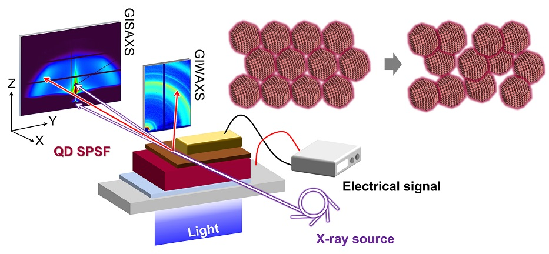
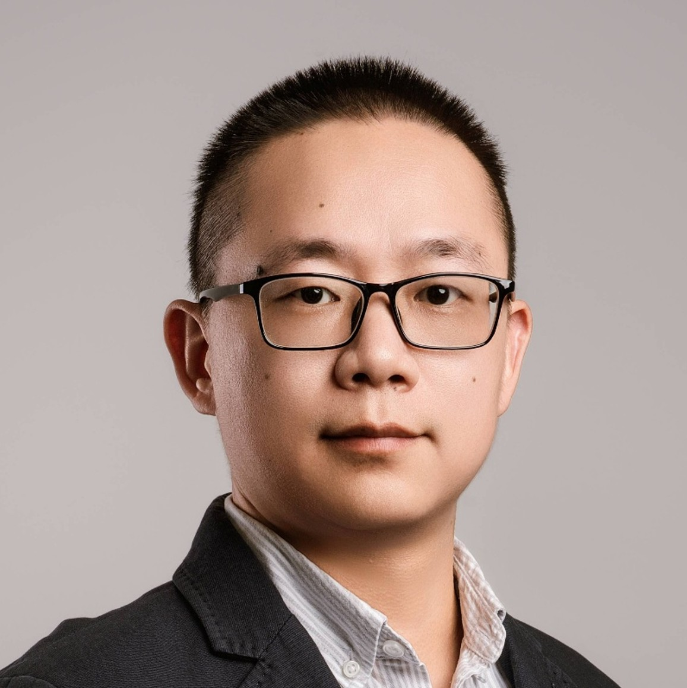
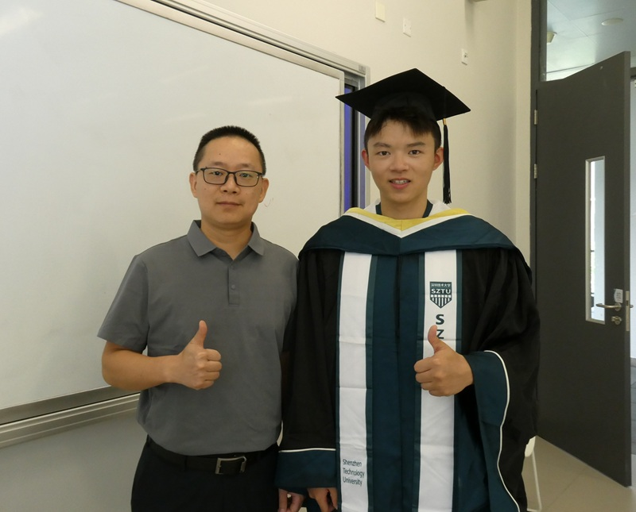

Wei Chen at Shenzhen Technology University
Dr. Wei Chen / 陈威 博士
Associate Professor (tenured) / 长聘副教授
College of Engineering Physics / 工程物理学院
Shenzhen Technology University (SZTU) / 深圳技术大学
E-mail: chenwei@sztu.edu.cn
>>Group page on X-MOL (in Chinese)
Research Interests

[1] Smart Optoelectronic Integration Systems (SOIS)
[2] Colloidal Quantum Dot-Based Short-Wave Infrared Detection and Imaging (QD-SWIR)
[3] Thin-Film Structure–Property Correlations via Grazing-Incidence X-ray Scattering (GIXS: GISAXS, GIWAXS)

Dr. Wei Chen is a tenured Associate Professor at Shenzhen Technology University (SZTU). He leads the Energy & Photonics Lab (EPL) and Lab for Smart Optoelectronic Integration Systems (SOIS). He holds a B.Sc. in Physics from Hubei Engineering University, an M.Sc. in Materials Science from Hubei University, and a Ph.D. (Dr.rer.nat.) from the Technical University of Munich (TUM), Germany.
Dr. Chen's research focuses on solution-processed semiconductor thin films, including colloidal quantum dots (CQDs), perovskites, and organic semiconductors, as well as smart optoelectronic integration systems. His work connects materials science, device physics, and system integration. He collaborates with academic and industry partners to develop next-generation optoelectronic devices and systems.
Before joining SZTU in 2022, Dr. Chen conducted research on CQD-based optoelectronic applications at the Southern University of Science and Technology (SUSTech). He was promoted to Associate Professor in 2024.
At SZTU, Dr. Chen teaches undergraduate courses in solid-state physics and semiconductor physics. He mentors students and welcomes those interested in materials science and photonic technologies to engage with the EPL and SOIS labs.
Latest Activities

[2026-06] Congratulations to group members on their graduation!
[2025-11] The group went hiking at Shuangyue Bay in Huizhou and took a group photo.
[2025-11] Group members attended the safety training for this semester at C5-106.
[2025-10] Dr. Chen hosted the International Seminar for Advanced Nano-Functional Materials at Shenzhen Technology University.